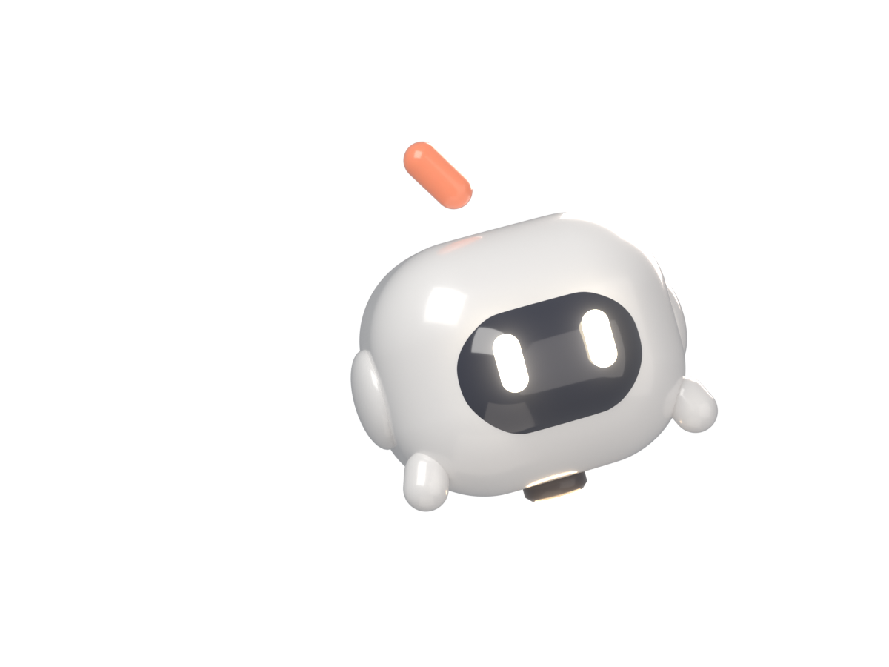
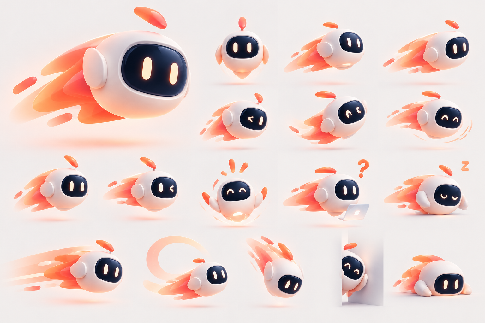
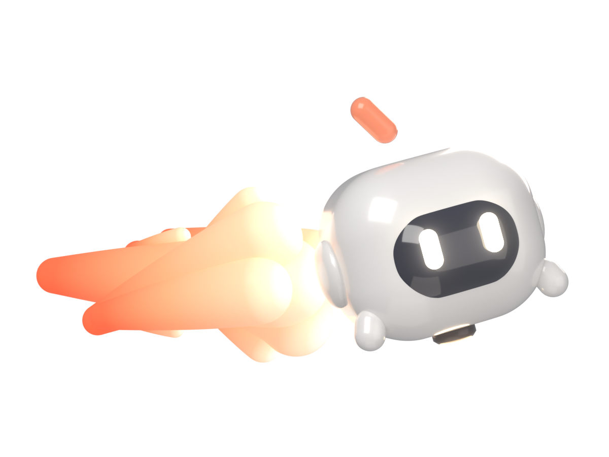

<meta charset="utf-8">
<title>Comet Bot Blender Review</title>
<meta name="claude:viewport-fit-sides" content="cover">
<link rel="preconnect" href="https://fonts.googleapis.com">
<link rel="stylesheet" href="https://fonts.googleapis.com/css2?family=Fraunces:opsz,wght@9..144,800&family=JetBrains+Mono:wght@500&display=swap">
<style>
/* One light theme on purpose: the renders are judged against the reference on its own sky. */
:root { color-scheme: light; --sky: #C9E1F7; --panel: #fff; --navy: #1B2F5B; --muted: #4F6A93; --coral: #E2663F;
  --serif: "Fraunces", Georgia, serif; --sans: system-ui, -apple-system, sans-serif; --mono: "JetBrains Mono", ui-monospace, monospace; }
* { box-sizing: border-box; }
html { background: var(--sky); }
body { background: var(--sky); color: var(--navy); font: 15px/1.5 var(--sans);
  padding-left: max(16px, env(safe-area-inset-left, 0px)); padding-right: max(16px, env(safe-area-inset-right, 0px)); }
main { max-width: 1180px; margin: 0 auto; padding-block: 36px 64px; display: grid; gap: 24px; }
h1 { font: 800 clamp(30px, 4.4vw, 46px)/1.04 var(--serif); margin: 0; letter-spacing: -.015em; text-wrap: balance; }
h2 { font: 800 20px/1.15 var(--serif); margin: 0; }
p { margin: 0; max-width: 64ch; }
.lede { color: var(--muted); font-size: 16px; }
.eyebrow { font: 500 12px/1 var(--mono); letter-spacing: .08em; text-transform: uppercase; color: var(--coral); }
.head { display: grid; gap: 10px; }
.pair { display: grid; grid-template-columns: repeat(2, minmax(0, 1fr)); gap: 18px; }
.card { background: var(--panel); border-radius: 22px; padding: 14px; display: grid; gap: 10px; min-width: 0; }
.frame { border-radius: 16px; overflow: hidden; background: radial-gradient(70% 60% at 50% 42%, #E2EFFB, #C4DCF5); aspect-ratio: 4 / 3; display: grid; place-items: center; }
.frame img { width: 100%; height: 100%; object-fit: contain; display: block; }
.frame.ref img { object-fit: cover; object-position: 0% 30%; }
.card p { font-size: 14px; color: var(--muted); }
.notes { background: var(--panel); border-radius: 22px; padding: 20px 22px; display: grid; gap: 10px; }
.notes ul { margin: 0; padding-left: 20px; display: grid; gap: 6px; }
.full { background: var(--panel); border-radius: 22px; padding: 14px; }
.full img { width: 100%; display: block; border-radius: 14px; }
@media (max-width: 760px) { .pair { grid-template-columns: minmax(0, 1fr); } }
</style>

<main>
  <div class="head">
    <span class="eyebrow">Paper Comet · Blender build · step 1</span>
    <h1>The bot, rendered in Blender</h1>
    <p class="lede">Path-traced with Cycles from a scripted model: coated glossy shell, domed visor, emissive eyes with bloom, soft studio light. Judge the bot on the left against the reference on the right. The flame version below is a first pass only.</p>
  </div>

  <div class="pair">
    <div class="card">
      <div class="frame"></div>
      <h2>Blender render, bot only</h2>
      <p>1200 × 900, 256 samples, transparent background. Head, visor, eyes, ear discs, antenna drop, arms and thruster.</p>
    </div>
    <div class="card">
      <div class="frame ref"></div>
      <h2>Reference</h2>
      <p>The hero from your sheet, cropped to the same framing.</p>
    </div>
  </div>

  <div class="card">
    <div class="frame"></div>
    <h2>With flames, first pass</h2>
    <p>The trail comes out from behind the head and streams back to the left: rounded teardrop lobes with a white-hot core fading to red-orange, and a warm light from the flames onto the shell. Still to do: more layering and translucency, and less white at the root.</p>
  </div>

  <div class="notes">
    <h2>What to check</h2>
    <ul>
      <li>Head proportions and how plump it is.</li>
      <li>Visor size, how it sits in the head, the highlight along its top.</li>
      <li>Eye size, glow strength, cream colour.</li>
      <li>Ear discs, antenna drop, arms, thruster glow.</li>
      <li>Overall lighting: soft, high-key, slightly warm.</li>
    </ul>
    <p>Each still takes about a minute to render here, so changes are quick to try. Once the bot is signed off, the next step is the flames, then the mood set as animated clips.</p>
  </div>

  <div class="full"></div>
</main>
